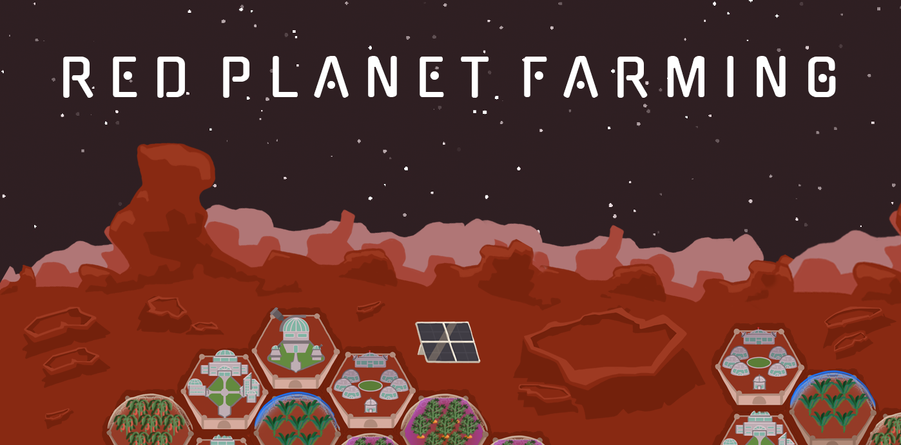
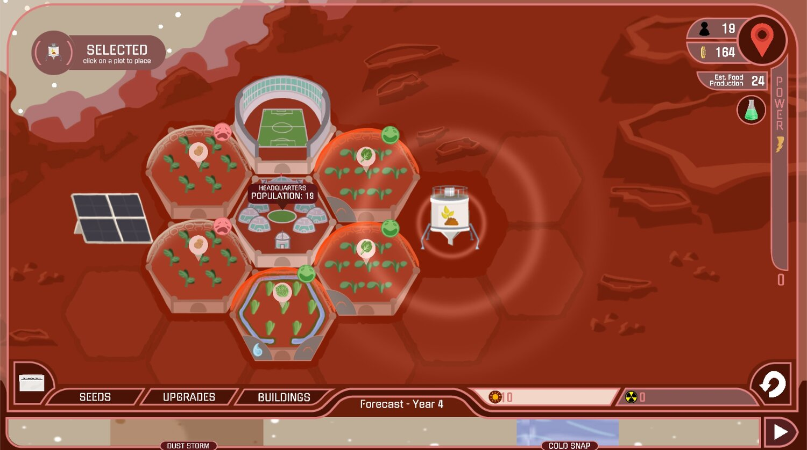
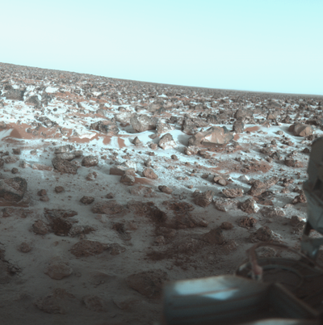
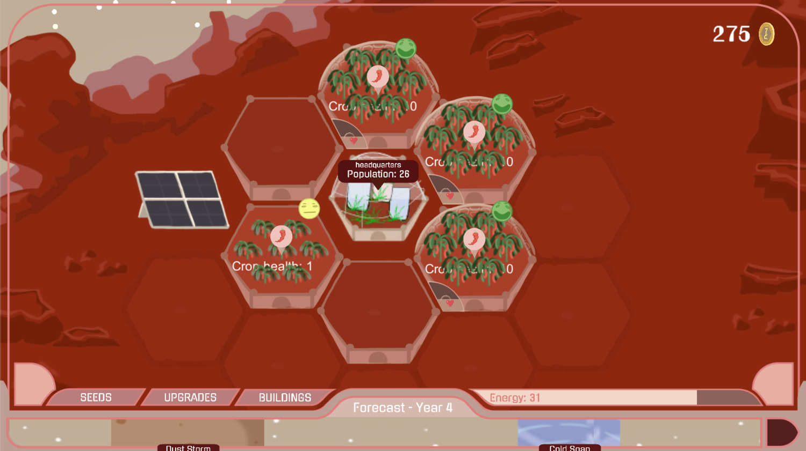
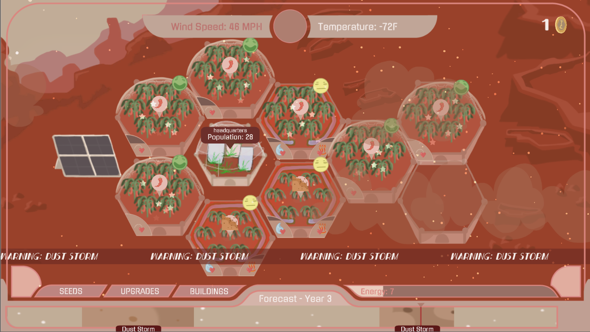
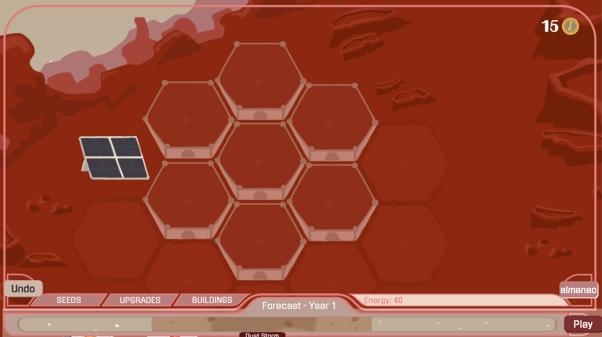
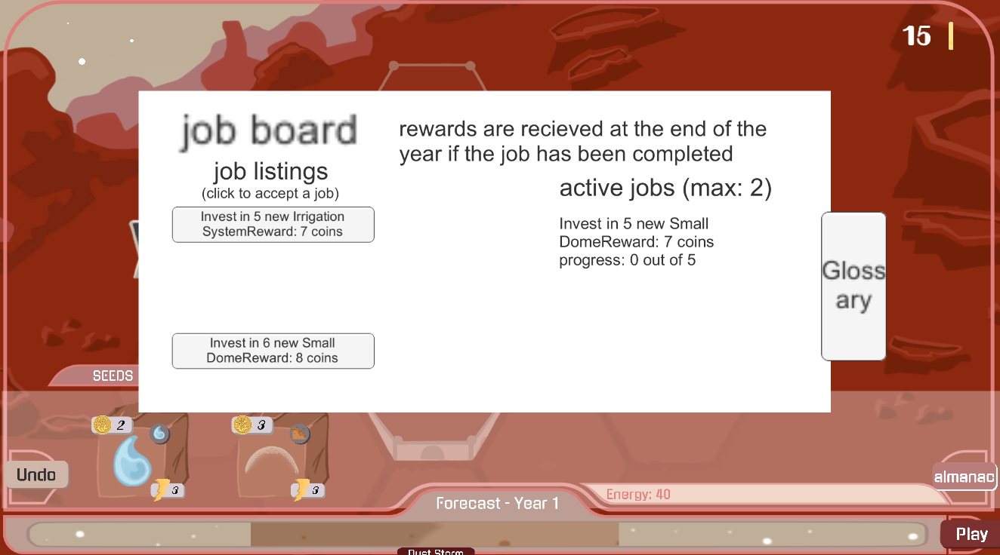
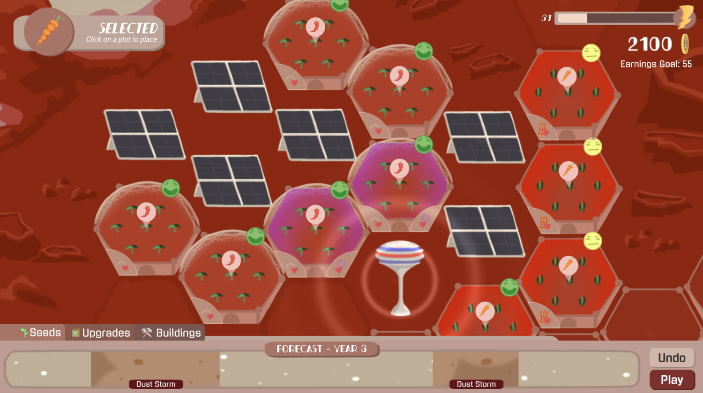

RED PLANET FARMING DEVLOG
RED PLANET FARMING - ANNOUNCEMENTS
Nina Demirjian - MAY 15 2020
Hello! It’s been a few weeks since my last post, but I hope that everyone is staying healthy + sane in these crazy times! If you’re feeling bored… don’t worry! Red Planet Farming is about to release on Steam!
You heard that right. Red Planet Farming will be out on Steam MAY 25! That’s only 10 days away! I can hardly contain my excitement.

Also, you may have noticed, but this blog has moved locations and has a new look. This blog was originally tied to my Squarespace portfolio site, but I have recently moved away from Squarespace to create my website by myself. So I had to transfer over all these posts, and that’s why the log looks a little different than usua
RED PLANET FARMING - WISHLIST ON STEAM!
Nina Demirjian - April 27 2020
Hello all! Exciting news! You can now
wishlist Red Planet Farming on Steam!
We are finally coming to the end of development and are thrilled that the full project is going to be released for everyone to play. We are planning for a mid-may release of the game!
RED PLANET FARMING NOW AVAILABLE ON COOLMATH GAMES!
Nina Demirjian - April 13 2020
Hello everyone, I know it has been a while since my last post, but we’ve all been extremely busy wrapping up development for RPF! Today I’m happy to share that the first level of Red Planet Farming, Gale Crater, is now available on CoolMath Games!
Check it out here!
Anyways, stay tuned for more release announcements in the coming weeks. We are planning to launch the full game (with all four levels) on Steam very soon! I am so excited for the game to be out!
RED PLANET FARMING - EXPANSION WARNINGS
Nina Demirjian - January 18 2020
In my last post I briefly described that some players were unhappy with the sudden expansion of the settlement in their plots of land, plowing over everything they had built. For a while, this was a mechanic that I stood behind, but I am starting to see the light.
Basically, when players build up their population, the city expands and removes any crops, upgrades, or buildings that they had placed there. Originally this was supposed to be a way to keep players from expanding too fast, and to give them a sense that their settlement really was growing thanks to their hard work. Unfortunately, I think this has been causing a lot of frustration. And I understand why — Red Planet Farming is a strategy game, and people don’t want to feel like the farm that they’ve planned and built up is just being taken away from them. Ultimately, the expanding city was doing a lot to work against the rest of the design of the game.
That all being said, I think the city expansion is still worth keeping in the game, to a degree. I’ve made some changes over the past few days that I really hope enhance the gameplay experience without having to sacrifice the (in my opinion funny) colonists taking over the player’s plots. This includes having the city prioritize expanding into empty plots that the player hasn’t built on, and giving the player a warning for where the city will expand. I’ve attached an image below of how the UI for this all looks:

The plot with the yellow and black stripes is due for expansion. The player can still plant and place stuff on it this year, but next year, the city will expand and demolish everything that was on the field. The player can either remove everything on the plot and get some of their money back, or they can plant something and have it grow there, but the plot won’t be theirs again next year.
In addition to this, I’ve also scaled back the number of times that the city expands. To be honest, I think I had a bug in the code before, and that’s why it was expanding so quickly. But I think I’ve ironed it out and have a pretty fair system in place now for the expansions.
RED PLANET FARMING - MAGFEST && UPDATES
Nina Demirjian - January 16 2020
Hello all, long time no post! We have been really busy with the holidays, MAGFest, and, of course, RPF development.
We are really grateful that we were able to attend MAGFest this year. It was our first time ever showing a game! There were a lot of people that came through and played, and the reactions were mostly positive.
That being said, there were a lot of comments about the expansion part of the game. People were pretty upset when the city expanded over their plots, and I understand that they were upset that it felt like the game was messing with their strategy. I’m now realizing that the expanding city was a bit trolly on my part and I really just liked watching people get annoyed, but I think that is not a good enough reason to keep this feature.
Anyways, here are some more recent screenshots of RPF below. We are working on getting all of the art for Gale Crater in:

RED PLANET FARMING - WEATHER VFX
Nina Demirjian - November 20 2019
Our artist Sean Park has been working on some visual effects for all of the different weather patterns in the game. So far, he has done dust storm and solar flare particles, and they are making the simulation phase of the game a lot more exciting to watch! He put together these demo scenes of all the particles:

I think my personal favorites from these are the lightning bolts in the dust storm and the distortion effect on the solar flare. I’ll probably end up putting the distortion effect on the cold snap systems too.
Here is some content from the game itself:

Up next we have some landslide and marsquake effects in the works. Based on the way the dust and solar effects turned out, I think they’ll probably look really good! I was doing some research on landslides and how the rocks fall so I could create a moodboard of landslide visuals as inspiration, and stumbled across
this WILD video on youtube.
Go to time marker 1:31 its literally the craziest thing I’ve seen. And landslides are probably even more dramatic on Mars because there aren’t any trees with roots to help keep the dirt in place!
Anyways I will make another post once the landslide and marsquake effects are in the game!
RED PLANET FARMING - MEDUSAE FOSSAE
Nina Demirjian - November 18 2019
Ok so I’ve actually had the fourth region, Medusae Fossae, implemented for a while now but never made a post about it because I didn’t get around to taking decent photos of it, and it was also not really playable. Its not actually that playable now either, but I’m working on it! This region, along with Utopia Planitia, definitely need a lot of work to catch up to Valles Marineris and Gale Crater, but that’s a priority for me in the next few weeks because I’m starting to get nervous overall about the state of this game currently and how quickly our expected launch times are approaching.

RED PLANET FARMING - Dramatic Before and After
Nina Demirjian - November 17 2019
Today I have an extremely dramatic set of before and after images of the information popups for the seeds, upgrades, and buildings. The “before” images are from the original version of the game that we submitted for the Sloan Grant, and the “after” images are from today.
Here are the before/after for the seed popups:
Here are the before/after for upgrade popups:
Here are the before/after for building popups:
And finally, the before/after for field popups:
I think it’s a bit funny to see what has and hasn’t changed in these images over time. I think the most important improvement here is the new consistency with the icons used in all of the popups. I tried to incorporate icons so that the player will have a better sense understanding how they can protect their crops. All of the popups use these icons to describe their functions.
I think it’s likely that the popups will continue to evolve, but not drastically. I personally think the Plot Overview feels a bit empty. Or maybe not. It just feels like something is off.
I’m also not married to these colors. Of course, the colors change region by region, so it will take some time to match the colors to each region specifically.
RED PLANET FARMING - Food Glorious Food
Nina Demirjian - November 4 2019
Today and yesterday I have been trying to give the game some added visual effects to enhance player experience. Also, a lot of people have been complaining that its not clear that crops get automatically harvested at the end of each year, so I decided to kill two birds with one stone:
As you can see I’ve decided to spice up the end of the year by having each field spit out some crops to represent a harvest. To do this, I simply made a particle system in Unity that plays briefly on each field, assigning a material with the specified crop to the system.

Also here are some funny “bloopers” if you will from when I was testing this feature:

RED PLANET FARMING - New UI
Nina Demirjian - October 20 2019
Hey all. Nina here. I’ve spent this past weekend working for three straight days on Red Planet Farming to prepare for a stream tomorrow (post about that to follow). Anyways, one of the things Noah was working on lately is some new UI so I just thought I’d show it off here. I’ve also been taking photos like these lately because I need to submit some photos to one of my advisors, who is going to make a post about Red Planet Farming on the Game Center website!
You might be able to see here that I’ve also added a new feature, which is present in the UI on the right. There is now a display that shows the player the ESTIMATED amount of food that they will make that year based on the crops that they have planted.
That estimate, however, does not take into account what will happen if the crops are damaged. So, if the player doesn’t protect their crops, this number will actually be far lower at the end of the year.
This feature threw me through a few hoops to implement. I started off by updating this number every time a player purchased/removed a crop. But the weirdest thing started happening! Plots were disappearing, purchased land wasn’t saved, and headquarters sprites weren’t appearing. I never actually figured out what was going on; mostly because I needed to focus my time on preparing for the stream, and not fixing this bug. So instead, I just implemented the feature in a slightly different, slightly (I think) less-efficient way, but at least now its working!
RED PLANET FARMING at NASA Ames Research Center
Nina Demirjian - October 10 2019
Today was quite an exhilarating day for me. I’ve traveled out to California in order to meet with the science advisors we’ve been working with that are at the NASA Ames Research Center.
I got to meet not only with my advisors, but with some other Mars experts, including a duststorm expert! They all had a lot of interesting ideas for things to put in the game. I’ll list a few:
-Dust devils
-Bees
-Edible tarantulas (!!)
-Algae tanks
-Plum trees to stop bone deterioration (!!)
-Cell cultures to grow meat
-Planetary Protection Laws
Anyways, it looks like I have my work cutout for me! It was a successful day and I feel excited about everything that was suggested today, but I also feel a bit overwhelmed. I’m now going to visit my brother, who also lives in California, for a few days, and I’m aiming to not touch the game in that time. I worry that working on it too much everyday is halting productivity, so I’m taking a break this weekend. But I’ll be back in action next week to prepare for our stream on Death By Audio!
Red Planet Family
Nina Demirjian - October 6 2019
I’ve been working on a small presentation/demo that I will be giving when I visit the NASA Ames research center this week, and realized that we now have a complete happy family with all the regions!
All four regions are now in the game :) Some of them are farther along than others of course. But I wanted to post this anyways because I feel like this collage is just so darn cute. I’ll be talking about Medusae Fossae in a later post probably.
Red Planet Soundtrack
Nina Demirjian - October 5 2019
Hello all. Very exciting post today. I want to introduce Sean Porio, who is the sound designer for Red Planet Farming. He’s been working with us for a while now, but I have some demos of some soundtracks for the game that we want to share now:
Check it out here!
This is a demo for Valles Marineris, which I AM EXTREMELY HAPPY WITH. I think its sounds wonderful! I’m very excited to see (or i guess hear) how the rest of the soundtrack turns out!
Red Planet Website
Nina Demirjian - October 1 2019
Yesterday was an exhilarating and tiring day. The time had come where the page on my portfolio for RPF would not suffice. Alas. It was time RPF’s very own website.
At the beginning of yesterday, I did not know the difference between HTML and CSS (I didn’t actually know what CSS was used for at all). At the end of yesterday, I had a website. What happened between those 12 hours was a long and grueling journey that I will not rehash now.
ANYWAYS, we now have a website and its being hosted on Github pages because, you know, free hosting. You can check it out here:
Red Planet Farming Website
Of course, it still has a long way to come but I’m feeling pretty good about it. Especially that parallax scroll at the top that I definitely didn’t look at example code for.
Red Planet Photos
Nina Demirjian - September 25 2019
This is for documentation purposes. I have nothing to say other than I played through Valles Marineris and it was looking good!

Arugula, Avocados, and Edamame (oh my!) && Updates
Nina Demirjian - September 16 2019
In preparation for our application for a second round of funding from the Sloan Foundation, we have added in a number of new crop animations, including Edamame, Arugula, Avocado, Spinach, and Lettuce.
I submitted the application last night, which included a power-point presentation, and a link to our updated Trello page with weekly assignments for all of our team members.
In addition, I’m really excited that we’ve started to incorporate some music into the game. I’ll be making a post dedicated to that sometime soon!
Red Planet Farming - Water Ponds
Nina Demirjian - September 11 2019
I have been playing around with some new mechanics for the third region, Utopia Planitia. I added Landslides and Marsquakes to Valles Marineris, and have been wanting to add something unique like that to Utopia as well.
One of the things I am working on now are little water ponds, which are upgrades that allow you to grow certain types of plants. However, you cannot place any other type of plants on these fields. In addition, plants that need a water pond cannot be placed on fields without water ponds.
Here, you can see that the blue-ish tiles have water ponds.
Other ideas that I’ve been floating around are dis-jointed groups of land, as well as having land be extremely expensive in this region. I also have it so that the cities expand waaaay faster in this region than in other regions.
Hello Surface Ice
Nina Demirjian - September 5 2019
Here’s some more progress on Utopia Planitia, a region of Mars with permafrost:
Below I’ve also included an actual image from this region of Mars:

Red Planet Farming - Utopia Planitia
Nina Demirjian - August 31 2019
The third region of RPF is finally in a somewhat presentable state:
This region has some ice which the player will be able to use as water to grow lots of new plants. The region will also have more extreme weather patterns like harsher storms that will kill crops instantly if they are not protected (!).
We also have some new art for the region as you can see above, as well as some new art for all of the different crops which I will be posting about shortly.
Red Planet Farming - New Power
Nina Demirjian - August 30 2019
*DISCLAIMER/UPDATE: As of May 14 2020, I want to let readers know that there is some incorrect information in this post. This entry discusses wind turbines as a source of energy on Mars, but further research and consultation with my science advisors has shown that there is probably not enough wind on Mars for turbines discussed in this entry to be a realistic source of power.*
Hello to the RPF community. Development is coming along nicely and we are starting to introduce new upgrades and buildings for the player. There will be many options for the player to choose from when it comes to buildings that provide energy. I’ve just finished implementing a wind turbine, which you can see in the image below. I went kind of ham with the turbines because I had a lot of money since I recently put in a cheat code to get more money (not saying what the cheat code is!)
Anyways, types of power generators will vary depending on region. So Valles Marineris will probably not have solar panels like Gale Crater, because it is down in a canyon and probably does not get a ton of sunlight. Similarly, there will be steam turbines that pick up geothermal energy in the canyon, but these turbines will probably not be available in some of the other regions at all.
The Characters of Red Planet Farming
Nina Demirjian - August 22 2019
We have recently hired another artist, Sean Park, who has been doing a lot of character art for RPF:

A lot of these characters are in the news a lot, especially the Mayor and Anita.
The mayor is often seen in the newspaper, making statements about either the colony in general, or about the player and their performance. Anita also shows up in the newspaper for her installments of the “Ask Anita!” advice column, which we are using as a way for players to get a glimpse into the lives of the colonists.
Marvin deMartini is the player’s personal assistant, and gives instructions and tips on how to be a successful Mars farmer.
Red Planet Farming - Notes From Some Playtests
Nina Demirjian - August 18 2019
I’ve recently had my roommates Xan and Francesca and my brother Marshall play through Red Planet Farming to see if they liked it, and to see if there were any bugs that I inevitable miss whenever I play through it myself. It seems like both playtests went really well, and I’m glad that the game is reaching a point where the playthroughs are actually quite long, because it has been a goal of mine to get the gameplay time to be a bit longer than it has been in the past. Here are some images from the playthroughs:
Marshall:
Xan and Francesca:
Red Planet Farming - Discounts
Nina Demirjian - August 15 2019
I ended up implementing something today that I had never really thought I would end up doing, which was giving the player adjacency bonuses for upgrades on their fields. It actually was relatively easy to implement. I think I was nervous to do it because I’m pretty nervous about making big changes that impact the game play drastically. It’s going to take a lot of balancing!
Red Planet Farming - Landslides!
Nina Demirjian - August 14 2019
Today, I was inspired. I don’t know by what. But I was inspired. I had an interesting idea, and luckily it was not too hard to implement. I decided I needed to spice up the Valles Marineris region and make it a bit different from Gale Crater, so I decided to implement “zones” on the farm that are impacted by landslides.
Instead of having only certain crops that are weak to landslides, all crops are now weak to landslides. There are just certain plots that are immune to them. These plots are marked, at the moment, by orange circles, but there will be better indication in the future.
In addition, Landslides are now a surprise >:). That means that they don’t show up on the forecast. And they also mostly appear after Marsquakes, but can appear at any time really.
As you can see in the second image, only the crops on the plots in the orange circles were damaged in the landslide. The plot outside the orange circle was safe!
Red Planet Farming - City Improvements
Nina Demirjian - August 9 2019
We’ve also been working a lot lately on improving the cities and population part of the game. We now have a system in place where graveyards start expanding into the player’s farmable plots if the population falls too quickly. On the other hand, if the population rises, buildings like schools and recreational centers start appearing.
Red Planet Farming - New Valles Marineris Art
Nina Demirjian - August 9 2019
It has been a hot minute since my last post, which I apologize for. But we’ve been working on some big changes over at RPF! The most notable is that players can now save their game progress, meaning they can exit the application and pick up where they left off later. I’ll be sharing some screenshots of the menu screens for this sometime in the future.
In addition, we’ve gotten some new art in for our second playable region, Valles Marineris. I’ve made some posts in the past about it, but I was mostly using dev art to get a sense of what I wanted this region to look like. So now the region looks a lot better than it did before:
I am beyond happy with how the art for this turned out. I think it looks perfect! Excited to see what the next two regions look like as well.
Red Planet Farming - Marsquakes
Nina Demirjian - July 16 2019
I am starting to work on implementing in new weather hazards into the game so that we can start playtesting the new regions. The new regions all have different weather patterns, and Valles Marineris is prone to landslides and marsquakes. Another explanation for the formation of Valles Marineris is tectonic plate activity, and with recent data from Martian rovers sensing marsquakes, we thought that it would be nice to include them. Just added it to the game. Now I just need to hook it up to the system that determines whether plants take damage from certain hazards or not.
In addition, I finally got through (I think) all of the setup necessary for saving the player’s data for when they want to switch between regions. This will also make it easier in the future when I want the player’s data to be saved when they quit out of the game as well.
Red Planet Farming - Introducing Valles Marineris
Nina Demirjian - July 15 2019
Hey all. We are so excited to finally be getting to a point in the development where we are putting in new levels. Valles Marineris is the first unlockable level in Red Planet Farming. Valles Marineris is a giant canyon on Mars that spans about the size of the United States! It is thought to have been formed by flowing water on ancient mars. It is also a probable landing site for future mars missions. In RPF, crops will need grow lights to survive down in the canyon.
I’ve also taken the time to add a lot more crops into the game, including crops that are a bit more realistic for a martian mission, ie leafy greens like spinach and lettuce.
An Exciting Blurb From our Artist, Noah
Nina Demirjian - June 27 2019
Hello all. Today we have an exciting guest post written by our fearless artist, Noah. I asked her to describe herself a little bit so that you all could get to know her better. Here’s what she has to say:
“Hey, I'm Noah and I'm working on the visual assets for Red Planet Farming! I guess a little about me, I'm a rising fourth-year at the NYU Game Center and the NYU Film & TV program studying games and animation. Uhh and I guess in these kinds of things people tend to mention that they like games and dogs and stuff and I do like games and dogs and stuff but I'm not sure what to say other than that?? Idk, but if you do wanna reach out about games or dogs or stuff I guess you can DM me on Twitter or something (@phlfp). Anyway I hope y'all are enjoying the game so far, and if you have any feedback on any visuals and UI and anything else related, feel free to reach out!”
Red Planet Farming - Perennial Crops
Nina Demirjian - June 25 2019
Today has been a pretty productive day so far. I implemented perennial crops, meaning crops that will stay for multiple years. Basically the loop is as follows: players can plant perennial crops, like peppers, and they will grow over the course of the year. They yield produce at the end. The difference now is that the plants do not disappear after harvest at the end of the year. Instead, they will continue to produce food until they run out of health, which is when they are removed from the farm. Crops can lose health if they are damaged in storms.
The goal of this is to create arcs within the game that take place at different lengths than the main arc, which is just the year cycle. Now, certain crops will last multiple years, giving a multi-year arc for some plants and some setups.
I was also hoping that this would alleviate the issues that come about when the player has expanded their farm vastly, and the amount of time that it takes to replant the entire farm keeps growing and growing until the loop is no longer fun.
Here’s a progression of a farm with peppers from a play-through that I did to make sure everything was working:

As you can see, the crops that were fully wilted in the second image are gone in the next image, because their health reached below 0.
I must admit, when I first was testing the system, I thought there was a bug, because I was so unused to seeing the grown crop sprites during the planning stages! But I’m actually very happy with how this turned out, especially because I was worried it was going to take a long time.
Red Planet Farming - Expanding Cities
Nina Demirjian - June 23 2019
I have been working a lot on integrating the new UI that Noah made into the main game scene, but I have also been getting the cities to expand when the population is flourishing. Right now, The main headquarters will expand when the city reaches certain population milestones. The city will expand into surrounding plots, removing any upgrades or buildings that the plot may have contained.
In addition, little “mansions” start popping up outside of the city once the population starts growing enough. There are also specific milestones that the player must reach for these to start appearing as well.
I still have a few things left to do for UI integration. But this week I want to focus on a few main things:
1. Allowing for crop types that live for multiple years
2. A “news” section for the Almanac that gives players some updates on what’s happening in the world of the game
3. Preparing a list of crops, upgrades and buildings that we want to put in the game.
Noah and I have a milestone on June 29th that we are working towards. I’m pretty happy with where the game is at right now.
There is still a lot of art that needs to get done, but I added a lot of asset requirements since we made the production plan so I don’t know how much of it will end up in the game. Not only that, but there was a lot more UI that needed to get done than a I realized. July is going to be a very exciting month for the world of Red Planet Farming because we are going to start creating the framework for the game to have multiple regions, where players can start new farms. Regions will also have unique sets of crops, upgrades, buildings and weather for the player to juggle. It is going to be a lot of work, and a lot of that work is probably going to have to happen outside of the Tuesdays, Wednesdays and Thursdays that I spend at the game center. I am already only able to keep up to date with the production plan by coding nights and weekends, but I’m not really sure what else I would be doing with my free time if I wasn’t working on Red Planet Farming.
I predict that my next entry will be about the news section of the Almanac. I also suspect that by then, Noah will have some assets for the Almanac that we can show here. I’m excited to see how it looks!
Red Planet Farming - Cities
Nina Demirjian - June 20 2019
Red Planet Farming has welcomed the addition of cities this week. Instead of forcing players to reach a certain profit, they now must feed a population of people. This is all very exciting because RPF felt a bit empty and emotionless before, but when players watch the population of their city rise and fall in accordance to how many plants they grow, I think it will give the game a but more weight. Here are some images of what it looks like with the city now:

Basically the way it works is that if the player is able to feed their population, then the population grows the next year. If they don’t feed everyone, the population falls. If the player fails to feed the population for consecutive years, then the population decreases exponentially. If the player reaches a tbd low population rate, their city dies, and they lose.
In addition, if the player’s population is doing well and growing fast, the city will start expanding into the surrounding plots, destroying anything the player has made along the way.
Red Planet Farming - UI Continued
Nina Demirjian - June 16 2019
Some images of the new UI:
Red Planet Farming - Quests, UI, and a Farewell to the Catalog
Nina Demirjian - June 13 2019
It’s been a week since my last post but a lot has happened in the world of Red Planet Farming. For one, we said good-bye to the Catalog system that we were trying out, because it turned out to be creating more problems than it was solving. I was sad to see what seemed like a good idea turn out to be not so good, but we’ve moved past it and are on to bigger and better things….
Like the UI! Noah has made some great assets, including some buttons that have a nice little animation attached to them. Its not completely done yet, but here’s how its looking so far:

Here is a gif of the buttons. Gifs are kind of slow so it doesn’t quite do the animation justice. It looks a lot smoother than this in real life!
In addition to all this, I also have implemented a quest system, which we are calling the “job board” in the game. Basically, players can choose to accept any of the job listings in the almanac, and then on completion, will be given a reward.

The visuals are looking a little rough but it’s a working prototype so there’s that. I can’t wait to see how it looks when it has art + ui done!
Red Planet Farming - NYU Playtest Thursday
Nina Demirjian - June 6 2019
The NYU Game Center runs an event every Thursday called Playtest Thursdays, where people can bring their games to have people play and get feedback.
My favorite part was watching people get really immersed in the experience. We also received a lot of interesting feedback about the game and we have a long way to come.
In addition, I’m struggling with what to do about the Catalog. I played through with the catalog and I felt like I was overwhelmed and not in a good position to decide what to plant (even though I’ve played the game more than anyone!) I think it might be because the catalog takes up the whole screen and maybe isn’t organized? Below I have an image to show what I’m talking about:
I really just need some people to play it the way it is now. I had people at Playtest Thursday play an old version of the game because the catalog version wasn’t ready yet.
Red Planet Farming - Glossary
Nina Demirjian - June 3 2019
People asked for a large list of all the crops and their stats, and they shall receive. The “catalog” that I discussed in my last post is turning into more of an Almanac. We now have added a Glossary section, where players can finally view all the different things they can buy simultaneously to compare stats with ease.
It doesn’t look great but everything has to start somewhere. I’m really looking forward to getting the catalog all polished and getting to a point where we can show it off. We are also considering putting in another section into the almanac, which is sort of like a “job posting” board, which would be the narrative explanation for giving the player quests. But, quests are the task for next week.
We have so many new ideas that I’m sure I will write about in the next few days as they become more and more fleshed out.
Red Planet Farming - Gameplay
Nina Demirjian - June 1 2019
Now that we have time to really focus on RPF full-time, Noah and I are thinking a lot about the design of the game itself. We have a lot of ideas about how we want the gameplay to change, and I’m feeling a little overwhelmed by the possibilities but I think that’s a good thing.
Over the past day or two, I have been quickly making a prototype of a slightly different iteration of the game. In this version, players must choose all of the plants and upgrades and buildings that they want to use for that year, and then those items are added to their inventory. Basically, there is a catalog at the beginning of each year where the player must select what they want to use for that year. It doesn’t look pretty but here’s an image:
The idea is that maybe players could buy items in “packs” or “bulk” and there are things that go out of stock. So, its not just a free-for-all type of situation anymore. I think this could give rise to specific strategies that the player could go for, but that’s kind of a vague idea floating around in my head at the moment and I need to spend more time thinking about it.
Taking a step back from development to really think about what we want the game to be has been very difficult for me. I like to always keep moving forward with development and get some programming done every single day, so I have had to fight the urge to start coding the past week or so. Of course, I am making this small prototype, so that’s something. I have to say though that I am looking forward to getting back into development, and to be in a place when I know concretely what the goals for the game are. I thought I knew what our goals were, but after talking to advisors, I realized that it would be beneficial to take a step back and try to think more about what I actually want for the future of RPF.
Red Planet Farming - Updates
Nina Demirjian - May 15 2019
It has been two or so weeks since I last posted an update on Red Planet Farming. Noah and I are currently dealing with finals, and I am dealing with graduation, so we have not had time to sit down and focus on the game.
Thankfully, all of that is coming to a close. It looks like we are going to be able to devote a lot more time to the game starting in the next few weeks, now that we are officially being supported by the Alfred P. Sloan Foundation! I am so excited that this grant is going to allow us to continue working on the game and allow it to realize its full potential. I have so many ideas already!
I have also been in contact with Dr. Jacob Cohen and his team at NASA, who have been guiding us with the development of the game and helping us to make it as scientifically accurate as possible. I am so glad that they are on board to continue aiding us throughout the next few months!
Until then, I think I may try to get some of my friends to playtest the game in its current state. I have a lot of ideas on how I want to expand gameplay, but would like to get second opinions on those ideas, as well as try to gather any feedback or new ideas from others as well. Noah and I have so much work to do in the next few months, but it should all be really fun and exciting. I cannot believe that this small game that I made for a solo game jam back in September (!!!) is going to turn into such an expansive project. Overall I feel really proud of Red Planet Farming and I also feel so lucky and grateful for everyone that has helped me get this far and has given me this opportunity to keep working on the game.
Red Planet Farming - Images From Today's Development Session
Nina Demirjian - April 28 2019



Red Planet Farming - Progress
Nina Demirjian - April 28 2019
I make a lot of before/after posts on this devlog to show how far Red Planet Farming has come, but here’s really the ultimate before and after:
The first image is from January, a month after I really started development. The second image is from about an hour ago, after adding in a bunch of new plots of land.
It’s crazy to see how much progress has been made on the game in just the past few months, especially since I was working at the museum and had school to juggle. I am very eager to see what the game looks like in a few months from now!
Red Planet Farming - Trailer!
Nina Demirjian - April 25 2019
Check out this cool trailer for Red Planet Farming! My roommate, McKay, is a video editor at Vice and kindly offered to make this short sort of teaser-trailer for the demo of the game.
Red Planet Farming Trailer from Nina Demirjian on Vimeo.
Red Planet Farming - Building Buttons
Nina Demirjian - April 21 2019
Over the weekend, we also got in the art for the buildings and the building buttons.
Anyways, I’m probably going to post another gameplay video tomorrow or Tuesday to show off some of the new art and features. I’m also having my roommate McKay make a trailer for the game. He works at Vice to I trust him haha.
Red Planet Farming - Forecast
Nina Demirjian - April 21 2019
I wasn’t expecting to really get any art or animations in for the forecast by the deadline for the game, but with sprite masks, it turned out to be a lot easier than I had anticipated. We want the forecast blocks to be animated, but are struggling to make them not too distracting, so for now they are just static images.
Red Planet Farming - Title Screen UI
Nina Demirjian - April 20 2019
I got around to dealing with the title screen UI. I don’t think it’s perfect yet. But I made it a lot more interesting than it was before. Basically, the title screen is in the “sky”, and when you hit start, the camera flies down to the martian surface where the farm is.
The gif unfortunately makes it look a lot slower than it actually is. In the game it looks so much smoother! Oh well.
We are also working on building sprite animations, so my next post will probably be about that.
Red Planet Farming - Double Upgrades
Nina Demirjian - April 17 2019
I just finished implementing the ability for players to have two upgrades on each plot. Its a feature that a lot of people have been asking for, and I was reluctant to do it because I thought it was going to take a lot longer than it actually did. But I’m happy because I think it will give people a much better game play experience. I was worried that the visuals would get too crowded, but I actually think it looks fine!
Red Planet Farming - Plant Animations
Nina Demirjian - April 15 2019
Today Noah and I finally got the plant animations into the game. It makes the simulation so much more fun to watch.
This is a gif from a playthrough I did a bit earlier. As you can see, some of the crops look more wilted than others, depending on how much damage they’ve taken throughout the year. You can even see the plantains in the bottom right completely wilt from the Cold Snap at the very end of the gif.
I’m so happy that each individual crop has gotten its own set of animations. It adds so much to the game, I can’t stop watching! Here are some more images I’ve taken of the new art:
This upcoming week I need to work on some bug fixes and the forecast at the bottom a bit more. Next weekend we’re going to finish up the art for the buildings. Its all coming together so fast!
Red Planet Farming - Results Screen
Nina Demirjian - April 13 2019
I worked on the results screen for the game today. Basically, at the end of each year, the player views a screen with results and earnings that they made, including a graph. I also added in a pie chart that breaks down the earnings by crop, and I redesigned the layout and color scheme. Here’s what it looks like now…
And here’s what it looked like before:

The pie chart was actually pretty easy to make. I took a circle image and set its setting to Fill - radial from the top, and then just set the fill amount to the percentage of earnings that a crop made, and rotated the image based on that percentage.

Red Planet Farming - Playthrough Video
Nina Demirjian - April 11 2019
I made a playthrough video of Red Planet Farming’s current state. I turned off some of the tutorials for this video just so I could show the main gameplay.
RPF-Playthru-4-11 from Nina Demirjian on Vimeo.
Red Planet Farming - Images From Today
Nina Demirjian - April 10 2019
Red Planet Farming - Domes
Nina Demirjian - April 7 2019
It is amazing to see how far RPF has come even in just these last few weeks, especially with all the art that’s been coming in.
I think I’ve mentioned before that Noah and I working with advisors at the Nasa Ames Research Center to make this game as scientifically accurate as possible. We’ve have a few phone calls with them and we’ve been talking a lot about how the plots should look, in terms of how they should be covered. Growing plants on Mars in an empty field is not feasible, so we’ve been working on getting like “building” structures on each plot to portray the idea that these are already somewhat-controlled spaces that the plants are being grown in.
In addition, I really like how the art is turning out for the various field upgrades, especially for the domes:
You can also see from this image the structures that we’ve put around each of the plots to show that they are indoors (player have sort of a birds-eye view of the buildings without their roofs).
I can’t wait to start getting in the crop sprite art next week!
RED PLANET FARMING UI - Before and After (Part II)
Nina Demirjian - April 6 2019
Here’s another before and after comparison of some of the stuff I was working on today:
Overall, today was pretty successful. Noah and I were working a lot on how we want each of the individual plots to look, and I think it’s coming along nicely. She’s finished some art for the upgrades, so I’ll be putting it into the project tonight or maybe tomorrow, and I’ll make another post updating what its starting to look like!
Red Planet Farming - Energy and Solar Panels
Nina Demirjian - April 5 2019
So I watched The Martian for the first time ever last night, and it was quite a wild ride. It’s interesting that the world is set in a time that doesn’t seem too distant into the future.
Anyways, what I noticed in the movie was that there was a lot of emphasis (or at least imagery) on solar panels, and that got me thinking about how I could incorporate this into my game. I implemented an energy system, where different upgrades and buildings take up a certain amount of energy. So you would need enough energy to power, say, three domed fields and a water tower. I added a small energy meter to the UI, and also added a solar panel building into the game. So players can now build solar panels and add to their energy levels.
Each upgrade and building now has a certain amount of energy it requires to remain powered, and I’ve updated the buttons to include this need:
You will notice that now there is a small lightning bolt and the required energy amount.
In addition to all this, I’ve been advised now by multiple people that plots should be allowed to have more than one upgrade. Unfortunately, based on the way that I’ve currently laid out the plots, it is going to be a UI challenge to get more than one upgrade on there. I feel a bit dumb because I think I always knew that more than one upgrade was going to be something that I would want to add to the game, but instead of feeling annoyed with having to redo the UI, I suppose this is a good lesson that I should be more prepared and set up my assets in a way that they can change easily down the line.
Anyways, I feel like I make so much progress each day on the game. It’s crazy to look back even two or three posts ago, which in real time, was only a few days ago, and look at how much I have been able to accomplish in this span of time.
Red Planet Farming - Art Explosion
Nina Demirjian - April 3 2019
These days, art is coming in left and right from my wonderful artist Noah. Look at how pretty the game is starting to look:
The game is finally starting to come to a place where i can just give it to people and i dont have to explain a million things to them before hand. And now, I’ve finally got all of the icons for what each seed type is weak to laid out on the packaging for the crops. I feel like it looks a lot more game-y and will hopefully alleviate the frustration of people being unable to see a plants properties without hovering.
Not only that, but the seed packing and vegetables look so glossy I love it.
Now I just need to start working on that forecast timeline.
Red Planet Farming - Results Screen UI
Nina Demirjian - April 1 2019
I am starting to realize throughout the process of making this game that UI is incredibly difficult to get right. I spent months programming the gameplay, and I feel like its going to take me just as long to get the UI to a point where I am content with it.
The two screens I’m struggling with most are the title screens and the results screens for the games. I was messing around with the results screen today and made some improvements that I kinda sorta like but… also not really:

I don’t think it looks bad. I just think there’s something a bit off with it. Maybe the colors? The screen would look more full based on how many different kinds of crops you grew that year. I think the button colors are a bit too warm. Or maybe the rest of the screen is just a bit too cool. I need to keep messing with it to see what looks good and what doesn’t.
Red Planet Farming UI - Before and After (Part I)
Nina Demirjian - March 30 2019
I stopped by just to document some before and after screenshots of how I’m changing the UI for the game, because I think it will be interesting to look back on in a bit!
Here are some “before” images:
And here are the modified UI elements:
Anyways, back to programming!
Red Planet Farming - Scientific Accuracy
Nina Demirjian - March 29 2019
I’ve really been aiming to use Red Planet Farming as a way to get people excited about sending humans to Mars someday, and with this comes a need for the game to be as scientifically accurate as possible.
I’ve been working with a team at the Nasa Ames center out in California to discuss some of the features of the game and how we can make it more accurate. When I originally designed this game for the game jam back in October, accuracy wasn’t my top priority, and I sacrificed accuracy for gameplay. Making the transition over has been in some cases smooth, and in some a bit difficult. For example, my advisors have stressed, plants would typically not be placed on just open fields. My artist and I are working together to see if we can get a dome asset placed over each of the fields to try to stress the need for protection in the Martian atmosphere.
In addition, I’ve been trying to add in some more features, or details, to really stress that this is not only a game about farming, but about the Martian environment and climate. I’ve attached an image below of some early-stage work I’m doing with having dynamic temperature and wind speed data for the player that coincides with the various weather hazards in the game.
I’m really excited about the way that its looking so far!
Anyways, over the next couple of weeks I’m trying to really focus on the scientific accuracy of the game, as well as pulling together the UI. I’m upset because there are a lot of other features (Quests, more content/seed types) that I was hoping to implement, but I think that I need to prioritize making what I have at the moment as clean and accurate as possible.
Red Planet Farming UI Design / Game on Itch
Nina Demirjian - March 29 2019
Progress on Red Planet Farming is still going strong. A lot of the main gameplay is in place - there aren’t really any other features that I was hoping to implement by late April. So I have been focusing a lot more on the UI.
My brother (a seasoned videogame player) played the game about a week ago and I was surprised to hear from him that a lot of the systems/gameplay didn’t make a whole lot of sense. However, when I explained to him what was actually going on in the game, we found that the real issue was a lack of information on the screen and a weak UI.
UI was not my focus until this week, as I just wanted to make sure that the game ran smoothly without bugs. But UI, it seems, is half the battle and I probably should have started it earlier. As I described in my last post, I added in a tutorial. I’ve also added a lot more explanation text around the game. Field popups now say what a crop needs in order to survive the year.
In addition, a lot of art is starting to come in from my artist, Noah. Pretty much anything in the game that isn’t pixel art or clip art is from her!
Below are some images of the UI designs at the moment. I’m still working on title and menu screens but they are definitely on the list.
Tutorialization in Video Games
Nina Demirjian - March 8 2019
hello and welcome to a long overdue blog post from your favorite programmer, nina. As you may recall in my previous post (from 2018!!!), i had just finished making a game for a solo game jam about farming on mars and surprise! A few months later and the game is back in the works. Its come a long way- saved data between years, an ability to choose the plots in which you plant seeds, and a timeline for the weather system. I’ve also got my friend Noah doing the art for the game and overall its turning out a lot better than the original demo I had submitted for the jam.
I’ve been working on the game for a few months now and I’ve stumbled across a design problem that I didn’t really think would be giving much too much trouble, but alas, here we are. I’ve never really been a huge fan of tutorials. I think they are a bit boring and I usually skip through them so that I can learn through practice. But I’m feeling like this game needs a bit of exposition at the beginning to explain to the player what’s going on. A lot of the people that will be playing this in the future will probably not have a lot of experience playing games and I’m hoping that the content isn’t lost on them because it just wasn’t explained properly at the beginning. So, I’m inclined to add an expository tutorial to the beginning of the first year.
Here are some pictures of what it’s looking like right now.

Anyways, hopefully I’ll write something soon and not do the thing where I completely ignore the fact that I have a devlog to be updating.
Mini Game Jam 11: Red Planet Farming
Nina Demirjian - September 23 2018
I just finished working on my project for the 11th Mini Jam game jam, and am now just waiting for my computer to finish downloading support for Unity to build to WebGL. Hopefully it gets submitted on time!
The limitation for this jam was NO TEXT WHATSOEVER, as they described it, and the theme was HARVEST. Along this vein, I decided to make a small farming simulator game that takes place on another planet, where there is no use for English, anyways.
This was my first game jam working alone, and I think it went pretty well. The jam started Friday morning at 12 am and ends tonight at midnight, but I’ve got homework to do so I’m submitting earlier.
For this game, I did all of the art, game design, and programming. The sound effects all come from FreeSound.
The game basically simulates a year with hazards and weather effect. The player has a budget, and chooses seeds to plant and buildings to build before simulating the year and the possible effects that the weather will have on the crops. In order to make it to the next year, you must end with a certain amount of money. Money comes from the profits of the crops that survive the year.
As you can see, different seeds have different costs, and have different effects, and different yields. Only certain combinations will allow the player to make enough profit to advance to the next year.
The most challenging part about this game was programming the simulation of the year. The simulation lasts about 25 seconds, and in that period of time, there are numerous effects that can harm the plants, such as dust storms, freezing temperatures, and if the player hasn’t purchased a water tower, droughts.
Trying to balance this game also was causing me significant problems. In an ideal world, I could have made a spread sheet and calculated and balanced the prices and yields of the seeds and buildings to make the game even, but alas, I did not have time to do this. But after a significant amount of play-testing, I think the balance is at a relatively decent place for a game jam game.
I spent a lot of time making the art for this game because I think that art makes a huge difference when it comes to the polish of the game, even for a jam. I kept the color scheme pretty minimal, to just reds, oranges, browns, and on occasion, green. I made almost all of the art with Piskel.
I’ll come back and post the itch.io link to the game after I finish uploading!